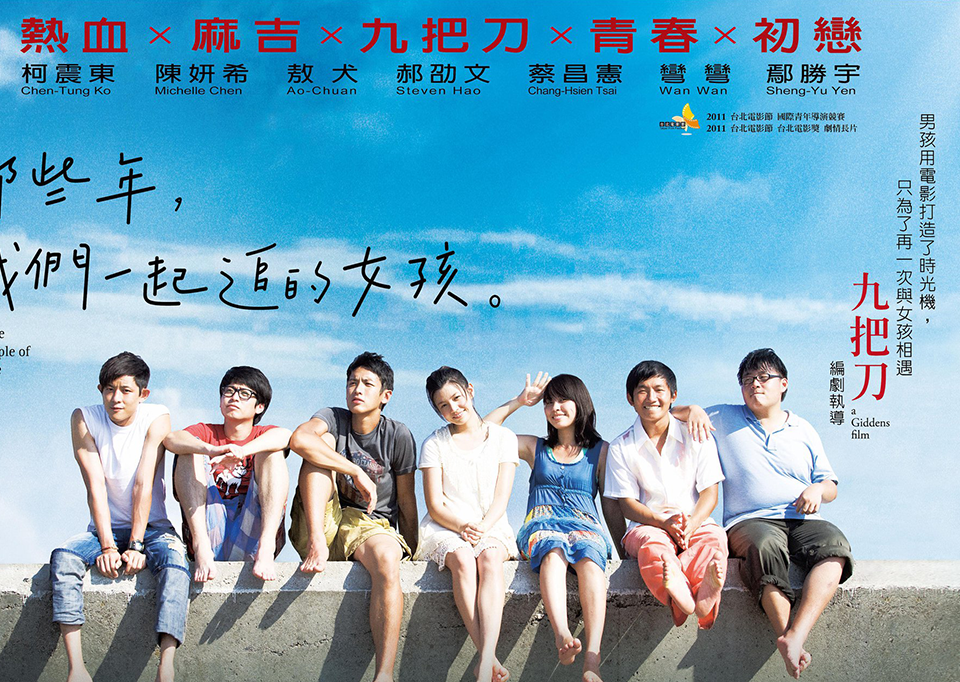

那些年我们一起追过的女孩
+预期回报
公司的一项投资组合中包含A、B、C三种股票，它们的权重分别为30%、40%、30%，预期收益率分别为15%、12%，10%，计算该投资组合的预期收益率。
-故事结构
你公司的一项投资组合中包含A、B、C三种股票，它们的权重分别为30%、40%、30%，预期收益率分别为15%、12%，10%，计算该投资组合的预期收益率。
成为了好友.2005年
+故事分析
是一个非常有趣、能发展幼儿想象力和扩散性思维的故事，写的是小鸭、小猫、小狗、小老虎、小兔到小猴子的商店买“Ｏ”，小猴子非常聪明，一一解决了问题。通过故事，发展了幼儿的语言表达能力、发散思维、创造思维能力和动手能力，引导幼儿遇到困难和问题时，要积极动脑筋想办法。体现了直观性原则、主体性原则、实践性原则、发展
+专业影评
无论是拍电影的九把刀也好，看电影的我们也好，在接触这部电影时心里一定会想起了某个人，可能那个人早已退出你的生活，可能还保持联系，也可能还在一起，但这些人都有一个共同的名字，叫初恋。这种初恋很简单，可以是一个人在背后默默地喜欢，也可以是像柯景腾跟沈佳宜一样成为朋友。不管你现在的生活有多么幸福多么快乐，初恋的冲动一去不复返，感谢那个带给我们冲动的那个人。
并不是所有的故事都是童话，沈佳宜说人生本来就有很多事都是徒劳无功的，她错了。“尽管眼下困难重重，但我心里仍然还有一个梦”，即使最后没能牵手，只要曾经发出过光芒，那以后的路就会走的更舒服。就像地震那天晚上身居两地的他们同时抬头看天上的月亮彼此牵挂一样，至少还能仰望同一片天空。
#以德报怨,真正活过的意义
2016 - 12 - 29 至 2017 - 3 - 15
123人收藏
以支持资金
$ 165,123.3
该项目在2017/03/15募集到300万元金额视为成功
目标金额
$3000000.00
-
支持人数
25人
立即支持
评论
1591910b0:这个电影很有趣
爱囚回复15919910b0:的确和有趣